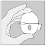
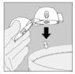
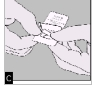

RÉSUMÉ DES CARACTÉRISTIQUES DU PRODUIT
ANSM - Mis à jour le : 27/08/2013
SPIRIVA 18 microgrammes, poudre pour inhalation en gélule
2. COMPOSITION QUALITATIVE ET QUANTITATIVE
Tiotropium ........................................................................................................................ 18 microgrammes
Sous forme de bromure de tiotropium monohydraté ........................................................... 22,5 microgrammes
Pour une gélule.
La dose délivrée à l'embout buccal du dispositif Handihaler, est de 10 microgrammes de tiotropium.
Excipient: lactose monohydraté
Pour la liste complète des excipients, voir rubrique 6.1.
Poudre pour inhalation en gélule.
Gélules vert clair, avec l'impression du code TI 01 du produit et du logo de la firme sur les gélules.
4.1. Indications thérapeutiques
Le tiotropium est indiqué comme traitement bronchodilatateur continu destiné à soulager les symptômes des patients présentant une bronchopneumopathie chronique obstructive (BPCO).
4.2. Posologie et mode d'administration
Posologie
La posologie recommandée de bromure de tiotropium est l'inhalation du contenu d'une gélule une fois par jour à heure fixe dans la journée (le contenu de la gélule est à inhaler à l'aide du dispositif HandiHaler).
La poudre de bromure de tiotropium contenue dans la gélule devra être inhalée uniquement à l'aide du dispositif Handihaler.
Ne pas dépasser la dose recommandée.
Les gélules sont destinées à l'inhalation exclusivement. Ne pas avaler les gélules.
Populations particulières
Sujets âgés :
Le bromure de tiotropium peut être utilisé chez les sujets âgés sans adaptation de la posologie.
Insuffisance rénale :
Chez les patients atteints d'insuffisance rénale, le bromure de tiotropium peut être utilisé à la dose recommandée. En cas d'insuffisance rénale modérée à sévère (clairance de la créatinine ≤ 50 ml/min) voir rubriques 4.4 et 5.2.
Insuffisance hépatique :
Le bromure de tiotropium peut être utilisé à la dose recommandée chez les patients atteints d'insuffisance hépatique (voir rubrique 5.2).
Population pédiatrique :
BPCO : Il n'y a pas de justification à l'utilisation de SPIRIVA chez les enfants de moins de 18 ans dans cette indication.
Mucoviscidose : la sécurité et l'efficacité de SPIRIVA chez les enfants et les adolescents n'ont pas été établies dans cette indication. Aucune étude n’est disponible.
Mode d’administration
Pour une administration correcte du médicament, le médecin ou un autre professionnel devra éduquer le patient au bon usage du dispositif.
Instructions pour la manipulation et l'utilisation
Les instructions suivantes permettent d'expliciter au patient comment inhaler le contenu d'une gélule de SPIRIVA à l'aide du dispositif HandiHaler.
|
 |
Suivez toujours scrupuleusement les instructions de votre médecin pour utiliser SPIRIVA. Le dispositif HandiHaler est exclusivement conçu pour SPIRIVA et vous ne devez pas l'utiliser pour prendre un autre médicament. Vous pouvez utiliser ce dispositif pendant un an maximum pour prendre SPIRIVA. |
|
Le dispositif HandiHaler |
|
|
1. Pour libérer le capuchon anti-poussière, appuyer complètement sur le bouton perforateur puis relâchez-le |
|
|
2. Relevez complètement le capuchon anti-poussière en le tirant vers le haut puis ouvrez l'embout buccal en le tirant vers le haut. |
|
|
3. Prenez une gélule de SPIRIVA du blister (juste avant l'utilisation) et placez-la dans la chambre centrale (5), conformément à l'illustration. La façon dont la gélule est placée dans la chambre centrale importe peu. |
|
|
4. Refermez l'embout buccal jusqu'à ce que vous entendiez un clic et laissez le capuchon anti-poussière ouvert |
|
|
5. Tenez le dispositif HandiHaler vertical, l'embout buccal dirigé vers le haut et enfoncez complètement le bouton-perforateur (vert) d'une seule pression, puis relâchez. Ceci perfore la gélule et libère le médicament que vous inhalerez lorsque vous inspirerez |
|
|
6. Expirez à fond.
|
|
|
7. Portez le HandiHaler à votre bouche et refermez fermement les lèvres autour de l'embout buccal. Maintenez la tête droite et inspirez lentement et profondément, à un rythme toutefois suffisant pour que vous entendiez ou sentiez la gélule vibrer. Inspirez jusqu'à remplir complètement vos poumons, puis retenez votre respiration aussi longtemps que vous le pouvez et ôtez le dispositif HandiHaler de votre bouche. Reprenez une respiration normale et répétez une fois les étapes 6 et 7, ce qui videra totalement la gélule de son contenu. |
|
|
 |
8. Ouvrez à nouveau l'embout buccal. Faites tomber la gélule et jetez-la. Refermez l'embout buccal et le capuchon anti-poussière pour conserver votre dispositif HandiHaler. |
Nettoyage du HandiHaler
|
Nettoyez votre HandiHaler une fois par mois. Ouvrez le capuchon anti-poussière et l'embout buccal, puis ouvrez la base en soulevant le bouton perforateur. Rincez complètement l'inhalateur à l'eau chaude pour enlever toute poudre restante. Séchez soigneusement le HandiHaler en absorbant l'excès d'eau sur une serviette en papier puis laissez sécher à l'air, en laissant l'embout buccal, le capuchon anti-poussière et la base ouverts. |
Manipulation du blister
|
A. Séparez le blister prédécoupé en détachant selon la perforation |
|
|
B. Relevez la feuille d'aluminium (juste avant l'utilisation) jusqu'à ce qu'une seule gélule devienne complètement visible. |
|
|
 |
C. Sortez la gélule. |
Les gélules de SPIRIVA ne contiennent qu'une petite quantité de poudre et ne sont donc que partiellement remplies.
4.4. Mises en garde spéciales et précautions d'emploi
Le bromure de tiotropium est un traitement bronchodilatateur continu de longue durée d'action en une prise par jour et ne doit pas être utilisé comme un médicament de secours de première intention pour le traitement de secours des épisodes aigus de bronchospasme.
Des réactions d'hypersensibilité immédiate peuvent apparaître après l'administration de bromure de tiotropium sous forme de poudre pour inhalation.
Compte tenu de son activité anticholinergique, le bromure de tiotropium doit être utilisé avec prudence en cas de glaucome à angle fermé, d'hypertrophie de la prostate ou de rétrécissement du col de la vessie (voir rubrique 4.8.).
D'une façon générale, l'administration de médicaments par voie inhalée est susceptible de déclencher un bronchospasme.
Les concentrations plasmatiques de bromure de tiotropium augmentent en cas d'altération de la fonction rénale; par conséquent chez les patients atteints d'insuffisance rénale modérée à sévère (clairance de la créatinine ≤ 50 ml/min), le produit ne sera utilisé que si le bénéfice attendu dépasse le risque potentiel. A ce jour, il n'y a pas d'expérience à long terme chez les patients souffrant d'insuffisance rénale sévère (voir rubrique 5.2).
Il conviendra d'avertir les patients du risque de déclenchement ou d'aggravation d'un glaucome à angle fermé, de douleur ou gêne oculaire, de vision floue transitoire avec halo visuel coloré associé à une rougeur et un œdème cornéo-conjonctival, en cas de projection intraoculaire de la poudre. Si une combinaison quelconque de ces symptômes oculaires apparaît, les patients doivent interrompre immédiatement l'utilisation du bromure de tiotropium et consulter immédiatement un médecin.
La sécheresse buccale observée avec les traitements anticholinergiques en général, peut à long terme favoriser la survenue de caries dentaires.
La posologie du bromure de tiotropium ne doit pas dépasser une prise par jour (voir rubrique 4.9).
SPIRIVA gélule contient 5,5 mg de lactose monohydraté.
4.5. Interactions avec d'autres médicaments et autres formes d'interactions
Il n'a pas été effectué d'étude spécifique d'interaction avec le bromure de tiotropium en poudre par voie inhalée; néanmoins, il n'a pas été rapporté de preuve clinique d'interactions médicamenteuses lors de l'administration concomitante d'autres médicaments habituellement utilisés dans la bronchopneumopathie chronique obstructive (BPCO) notamment: bronchodilatateurs sympathomimétiques, méthylxanthines, corticostéroïdes oraux et inhalés.
La co-administration de bromure de tiotropium avec d'autres médicaments anticholinergiques n'a pas été étudiée et n'est, par conséquent, pas recommandée.
Aucune donnée clinique documentée n'est disponible sur une exposition au bromure de tiotropium survenue au cours d'une grossesse.
Les études chez l'animal ont montré une toxicité sur la reproduction associée à une toxicité maternelle (voir rubrique 5.3). Le risque potentiel chez l'homme est inconnu. SPIRIVA ne doit par conséquent être administré au cours de la grossesse que si son indication est clairement justifiée.
Allaitement
Il n'a pas été établi si le bromure de tiotropium était excrété dans le lait maternel. Malgré des études effectuées chez les rongeurs ayant démontré que le bromure de tiotropium était excrété dans le lait maternel uniquement en petites quantités, l'utilisation de SPIRIVA n'est pas recommandée au cours de l'allaitement. Le bromure de tiotropium est un composé à longue durée d'action. La décision de poursuivre ou d'interrompre l'allaitement ou le traitement par SPIRIVA doit être prise en tenant compte du bénéfice de l'allaitement chez l'enfant et du bénéfice du traitement par SPIRIVA chez la femme.
Fertilité
Aucune donnée clinique sur la fertilité n'est disponible avec le tiotropium. Une étude animale réalisée avec du tiotropium n'a pas montré d'effets indésirables sur la fertilité (voir rubrique 5.3).
4.7. Effets sur l'aptitude à conduire des véhicules et à utiliser des machines
Les effets sur l'aptitude à conduire des véhicules et à utiliser des machines n'ont pas été étudiés. La survenue d'étourdissements, d'une vision trouble ou de céphalées peut retentir sur l'aptitude à conduire des véhicules ou à utiliser des machines.
Un grand nombre des effets indésirables rapportés peuvent être attribués aux propriétés anticholinergiques du tiotropium.
Tableau résumé des effets indésirables
Les fréquences des effets indésirables présentés ci-dessous sont basées sur les taux d'incidence brute des effets indésirables observés dans les groupes de patients traités par tiotropium (9 647 patients) (c'est-à-dire les événements imputables au tiotropium), à partir du regroupement de 28 études cliniques contrôlées contre placebo, dont les durées de traitement étaient comprises entre 4 semaines et 4 ans.
La fréquence est définie selon la classification conventionnelle :
Très fréquent (≥1/10) ; fréquent (≥1/100 à <1/10) ; peu fréquent (≥1/1000 à <1/100) ; rare (≥1/10 000 à <1/1000) ; très rare (<1/10 000) ; non déterminé (fréquence ne pouvant être estimée sur la base des données disponibles).
|
Classe organe/Terme MedDRA |
Fréquence |
|
Troubles du métabolisme et de la nutrition |
|
|
Déshydratation |
Non déterminée |
|
Troubles du système nerveux |
|
|
Etourdissements |
Peu fréquents |
|
Céphalées |
Peu fréquentes |
|
Dysgueusie |
Peu fréquente |
|
Insomnie |
Rare |
|
Troubles oculaires |
|
|
Vision trouble |
Peu fréquente |
|
Glaucome |
Rare |
|
Augmentation de la pression intraoculaire |
Rare |
|
Troubles cardiaques |
|
|
Fibrillation auriculaire |
Peu fréquente |
|
Tachycardie supraventriculaire |
Rare |
|
Tachycardie |
Rare |
|
Palpitations |
Rare |
|
Troubles respiratoires, thoraciques et médiastinaux |
|
|
Pharyngite |
Peu fréquente |
|
Dysphonie |
Peu fréquente |
|
Toux |
Peu fréquente |
|
Bronchospasme |
Rare |
|
Epistaxis |
Rare |
|
Laryngite |
Rare |
|
Sinusite |
Rare |
|
Troubles gastro-intestinaux |
|
|
Sécheresse buccale |
Fréquente |
|
Reflux gastro-œsophagien |
Peu fréquent |
|
Constipation |
Peu fréquente |
|
Candidose oropharyngée |
Peu fréquente |
|
Occlusion intestinale, y compris iléus paralytique |
Rare |
|
Gingivite |
Rare |
|
Glossite |
Rare |
|
Dysphagie |
Rare |
|
Stomatite |
Rare |
|
Nausée |
Rare |
|
Caries dentaires |
Non déterminées |
|
Troubles de la peau et du tissu sous-cutané, troubles du système immunitaire |
|
|
Eruption cutanée |
Peu fréquente |
|
Urticaire |
Rare |
|
Prurit |
Rare |
|
Hypersensibilité (y compris réactions d'hypersensibilité immédiate) |
Rare |
|
Œdème de Quincke |
Rare |
|
Infection cutanée, ulcération cutanée |
Non déterminées |
|
Peau sèche |
Non déterminée |
|
Troubles musculosquelettiques et systémiques |
|
|
Articulations enflées |
Non déterminé |
|
Affections du rein et des voies urinaires |
|
|
Dysurie |
Peu fréquente |
|
Rétention d'urine |
Peu fréquente |
|
Infection urinaires |
Rare |
Description de certains effets indésirables :
Dans les essais cliniques contrôlés, les effets indésirables les plus fréquemment observés ont été des effets indésirables de type anticholinergique tels que la sécheresse buccale survenue chez environ 4% des patients. Dans 28 essais cliniques, la sécheresse buccale a été à l'origine de 18 arrêts de traitement parmi les 9 647 patients traités par le tiotropium (soit 0,2 % des patients traités).
Les effets indésirables graves attribués aux effets anticholinergiques incluent: glaucome, constipation et occlusion intestinale incluant iléus paralytique, ainsi que rétention urinaire.
Autres populations particulières:
L'incidence des effets anticholinergiques peut augmenter avec l'âge.
Déclaration des effets indésirables suspectés
La déclaration des effets indésirables suspectés après autorisation du médicament est importante. Elle permet une surveillance continue du rapport bénéfice/risque du médicament. Les professionnels de santé déclarent tout effet indésirable suspecté via le système national de déclaration : Agence nationale de sécurité du médicament et des produits de santé (ANSM) et réseau des Centres Régionaux de Pharmacovigilance - Site internet: www.ansm.sante.fr.
L'administration de doses élevées de bromure de tiotropium peut déclencher l'apparition de signes et symptômes de type anticholinergique.
Cependant, l'inhalation d'une dose allant jusqu'à 340 microgrammes de bromure de tiotropium n'a été suivie d'aucun effet indésirable de type anticholinergique systémique chez des volontaires sains. En outre, aucun effet indésirable significatif, hormis la sécheresse buccale, n'a été observé après 7 jours d'administration de doses de bromure de tiopropium allant jusqu'à 170 microgrammes chez des volontaires sains. Aucun effet indésirable significatif n'a par ailleurs été observé lors d'une étude de 4 semaines réalisée chez des patients atteints de BPCO, recevant des doses journalières maximales de 43 microgrammes de bromure de tiotropium.
En cas d'ingestion accidentelle de gélules de bromure de tiotropium, l'intoxication aiguë est peu probable compte tenu de la faible biodisponibilité orale.
5. PROPRIETES PHARMACOLOGIQUES
5.1. Propriétés pharmacodynamiques
Classe pharmacothérapeutique: Autres médicaments pour les syndromes obstructifs des voies aériennes par inhalation, anticholinergiques.
Code ATC: R03BB04.
Mécanisme d'action:
Le bromure de tiotropium est un antagoniste spécifique des récepteurs muscariniques de longue durée d'action, souvent désigné en pratique clinique sous le terme "anticholinergique". En se fixant aux récepteurs muscariniques des muscles lisses des bronches, le bromure de tiotropium inhibe les effets cholinergiques (bronchoconstriction) de l'acétylcholine, libérée à partir des terminaisons nerveuses parasympathiques. Il possède une affinité similaire pour les sous-types de récepteurs muscariniques M1 à M5. Dans les voies aériennes, le bromure de tiotropium inhibe de façon réversible et compétitive les récepteurs M3, ce qui se traduit par une relaxation du muscle lisse bronchique. L'effet est dose-dépendant et persiste plus de 24 heures. La longue durée d'action est probablement due à la dissociation très lente des récepteurs M3, la demi-vie de dissociation étant significativement plus longue que celle observée avec l'ipratropium.
Anticholinergique N-quaternaire, le bromure de tiotropium exerce un effet sélectif direct au niveau des bronches lorsqu'il est administré par inhalation; et offre ainsi une marge thérapeutique acceptable avant l'apparition d'effets anticholinergiques systémiques.
Effets pharmacodynamiques:
La bronchodilatation est principalement due à un effet local (sur les voies aériennes) et non pas à un effet systémique. Le tiotropium se dissocie plus rapidement des récepteurs M2 que des récepteurs M3, comme le suggèrent les études in vitro, marquant une sélectivité plus importante (exprimée de façon cinétique) pour les récepteurs de type M3 par rapport à M2. La fixation importante et prolongée aux récepteurs explique la bronchodilatation cliniquement significative et de longue durée chez les patients atteints de BPCO.
Electrophysiologie cardiaque
Electrophysiologie: Lors d'une étude spécifique de l'intervalle QT conduite chez 53 volontaires sains, SPIRIVA administré à la dose de 18 mcg et 54 mcg (soit trois fois la dose thérapeutique) pendant 12 jours n'a pas augmenté de façon significative l'intervalle QT sur l'électrocardiographe.
Données d'efficacité cliniques :
Le programme de développement clinique comprend quatre études d'un an et deux études de 6 mois, toutes randomisées et en double aveugle, portant sur un total de 2663 patients, dont 1308 ont reçu le bromure de tiotropium. Parmi les études menées sur un an, deux étaient contrôlées contre placebo et deux contre comparateur actif (ipratropium) ; les deux études de 6 mois étaient contrôlées contre placebo et salmétérol. Ces études ont inclus des mesures de la fonction pulmonaire et des critères cliniques tels que dyspnée, exacerbations et qualité de vie. Dans ces études, l'administration de bromure de tiotropium en dose unique journalière a permis d'obtenir une augmentation significative de la fonction pulmonaire [volume expiré maximum lors de la première seconde (VEMS) et capacité vitale forcée (CVF)] dans les 30 minutes suivant la première dose et se maintenant pendant 24 heures. L'état d'équilibre pharmacodynamique a été atteint en une semaine, l'effet bronchodilatateur maximal étant observé dès le troisième jour. Les mesures effectuées quotidiennement par le patient ont montré que le bromure de tiotropium a significativement amélioré le DEP (débit expiratoire de pointe) du matin et du soir. L'activité bronchodilatatrice du bromure de tiotropium s'est maintenue au cours de l'année pendant laquelle le produit était administré, sans épuisement de l'effet.
Une étude clinique randomisée, contrôlée contre placebo, réalisée chez 105 patients atteints de BPCO, a révélé pendant la totalité de l'intervalle de 24 heures entre deux prises, un effet bronchodilatateur par rapport au placebo se maintenant, quel que soit le moment de l'administration, le matin ou le soir.
Les études à long terme (6 mois et un an) ont montré que le bromure de tiotropium a significativement amélioré la dyspnée (mesurée d'après l'indice de dyspnée transitionnel de Mahler), cette amélioration se maintenant sur toute la période de traitement.
Le retentissement de l'amélioration de la dyspnée sur la tolérance à l'exercice a été étudié dans deux essais cliniques randomisés, en double aveugle, contrôlés versus placebo chez 433 patients atteints de bronchopneumopathie chronique obstructive (BPCO) modérée à sévère. Lors de ces essais, un traitement de 6 semaines avec SPIRIVA a significativement amélioré le temps d'endurance au cours d'un exercice standardisé sur cycloergomètre à 75 % de la puissance maximale, de 19,7 % (essai A: 640 secondes avec SPIRIVA versus 535 secondes avec le placebo, en comparaison à un temps à l'inclusion avant traitement de 492 secondes) et de 28,3 % (essai B: 741 secondes avec Spririva versus 577 secondes pour le placebo, en comparaison à un temps à l'inclusion avant traitement de 537 secondes).
Dans un essai clinique randomisé, en double aveugle, contrôlé versus placebo chez 1829 patients atteints de bronchopneumopathie chronique obstructive (BPCO) modérée à sévère, le bromure de tiotropium a réduit de façon statistiquement significative la proportion de patients présentant des exacerbations de BPCO (de 32,2 % à 27,8 %) et réduit de façon statistiquement significative le nombre d'exacerbations de 19 % (de 1,05 à 0,85 exacerbations par patient par an). De plus, 7,0 % des patients du groupe bromure de tiotropium contre 9,5 % des patients du groupe placebo ont été hospitalisés pour une exacerbation de BPCO (p = 0,056). Le nombre d'hospitalisation dû à la BPCO a été réduit de 30 % (de 0,25 à 0,18 par patient par an).
Lors d'un essai clinique randomisé, en double aveugle et contre placebo de 9 mois chez 492 patients, SPIRIVA a amélioré la qualité de vie telle que déterminée par le score total du questionnaire respiratoire du Saint George's Hospital (SGRQ). La proportion des patients traités par SPIRIVA chez lesquels le score total de ce questionnaire s'est cliniquement amélioré de plus de 4 unités, était de 10,9 % plus élevée que dans le groupe placebo (59,1 % dans le groupe SPIRIVA contre 48,2 % dans le groupe placebo (p=0,029)). La différence moyenne entre les groupes était de 4,19 unités (p=0,001; intervalle de confiance: 1,69 - 6,68). Les améliorations du score SGRQ étaient de 8,19 unités pour le domaine relatif aux « symptômes », de 3,91 unités pour le domaine « activité » et de 3,61 unités pour le domaine « impact sur la vie quotidienne ». Les améliorations de ces domaines distincts étaient statistiquement significatives.
Dans un essai clinique de 4 ans, randomisé, en double aveugle, contrôlé versus placebo chez 5993 patients randomisés (3006 dans le groupe placebo et 2987 dans le groupe SPIRIVA), l'amélioration du VEMS par rapport au placebo est restée constante tout au long de la période d'étude de 4 ans. Une plus grande proportion de patients ont pris au moins 45 mois de traitement dans le groupe SPIRIVA par rapport au groupe placebo (63,8 % vs. 55,4 %, p<0,001). Le taux annuel de déclin du VEMS comparé au placebo a été similaire entre SPIRIVA et le placebo. Pendant la période de traitement, il a été retrouvé une réduction du risque de mortalité de l'ordre de 16 %. L'incidence de la mortalité a été de 4,79 pour 100 patients-années dans le groupe placebo vs. 4,10 pour 100 patients-années dans le groupe tiotropium (hazard ratio (tiotropium/placebo) = 0,84, intervalle de confiance à 95 %: 0,73 - 0,97). Avec le traitement par tiotropium, la survenue de cas d'insuffisances respiratoires (déclarés en tant qu'évènements indésirables) a été plus faible par rapport au groupe placebo de 19 % (2,09 versus 1,68 cas pour 100 patients-années, risque relatif (tiotropium/placebo) = 0,81, intervalle de confiance à 95 %: 0,65 - 0,999).
Un essai de 1 an, randomisé, en double aveugle, double placebo, en groupe parallèle, a comparé l’effet d’un traitement avec SPIRIVA 18 microgrammes une fois par jour à celui de salmétérol 50 microgrammes en inhalateur doseur pressurisé deux fois par jour sur la survenue d’exacerbations modérées et sévères chez un total de 7 376 patients atteints de BPCO et ayant des antécédents d’exacerbations durant l’année précédant l'inclusion dans l'étude. (cf tableau 1 ci-dessous)
Tableau 1 : Résumé de l’analyse des exacerbations
|
Critères de jugement |
SPIRIVA 18 microgrammes (HandiHaler)
N= 3 707 |
Salmétérol 50 microgrammes (inhalateur doseur pressurisé) N=3 669 |
Risque relatif (hazard ratio) (95% IC) |
Valeur de p |
|
Délai (jours) de survenue de la première exacerbation† |
187 |
145 |
0,83 (0,77 - 0,90) |
< 0,001 |
|
Délai de survenue de la première exacerbation sévère (nécessitant une hospitalisation)§ |
- |
- |
0,72 (0,61 - 0,85) |
< 0,001 |
|
Patients avec ≥1 exacerbation, n (%)* |
1 277 (34,4) |
1 414 (38,5) |
0,90 (0,85 - 0,95) |
< 0,001 |
|
Patients avec ≥ 1 exacerbation sévère (nécessitant une hospitalisation), n (%)* |
262 (7,1) |
336 (9,2) |
0,77 (0,66 - 0,89) |
< 0,001 |
† Le délai (en jours) se réfère au 1er quartile des patients. Le délai a été analysé en utilisant un modèle de Cox avec comme covariables le centre et le traitement. (Le risque relatif se réfère au rapport de risques : « Hazard ratio »)
§ Le délai a été analysé en utilisant un modèle de Cox avec comme covariables le centre et le traitement. Le délai (en jours) pour le 1er quartile de patients ne peut pas être calculé du fait d’un nombre trop faible de patients présentant une exacerbation sévère.
* Le nombre de patients présentant un événement a été analysé par un test de Cochran-Mantel-Haenszel stratifié sur le centre. (Le risque se réfère au rapport de risque « Hazard ratio »)
Le délai moyen de survenue de la première exacerbation était supérieur dans le groupe SPIRIVA comparé au groupe de traitement par salmeterol (187 jours versus 145 jours), avec une réduction du risque de survenue de 17% (Hazard ratio=0,83 ; Intervalle de confiance (IC) à 95% : 0,77 à 0,90 ; p<0,001). Le délai moyen de survenue de la première exacerbation sévère (nécessitant une hospitalisation) était également supérieur dans le groupe SPIRIVA (Hazard ratio =0,72 ; IC 95% : 0,61 à 0,85 ; p<0,001).
Population pédiatrique
L’agence européenne du médicament a accordé une dérogation à l'obligation de soumettre les résultats d’études réalisée avec SPIRIVA dans tous les sous-groupes de la population pédiatrique dans le cadre du traitement de la BPCO et de la mucoviscidose (voir rubrique 4.2 sur l’utilisation pédiatrique).
5.2. Propriétés pharmacocinétiques
Le bromure de tiotropium est un ammonium quaternaire non chiral, peu soluble dans l'eau. Il est administré par voie inhalée sous forme de poudre sèche. Après inhalation, la majorité de la dose délivrée se dépose au niveau du tractus digestif et, dans une plus faible mesure, au niveau de l'organe cible, le poumon. De nombreux résultats pharmacocinétiques décrits dans les paragraphes suivants ont été obtenus avec des doses plus élevées que celles recommandées en clinique.
b) Caractéristiques pharmacocinétiques générales de la substance active après l’administration de la spécialité
Absorption: après inhalation de poudre sèche chez de jeunes volontaires sains, la biodisponibilité absolue est de 19,5 %, ce qui suggère que la fraction atteignant le poumon présente une biodisponibilité élevée. En raison de la structure chimique du produit (ammonium quaternaire) et compte tenu des résultats des expérimentations in vitro, l'absorption digestive attendue du bromure de tiotropium (10 - 15 %) est faible. La biodisponibilité absolue des solutions orales de bromure de tiotropium est de 2 à 3 %. Les concentrations plasmatiques maximales de bromure de tiotropium ont été atteintes cinq minutes après l'inhalation. La prise d'aliments ne semble pas influencer l'absorption de cet ammonium quaternaire.
Distribution: la liaison du bromure de tiotropium aux protéines plasmatiques est de 72 % et son volume de distribution est de 32 l/kg. Chez les patients présentant une BPCO, les concentrations plasmatiques maximales de bromure de tiotropium atteintes à l'équilibre sont de l'ordre de 17-19 pg/ml 5 minutes après l'inhalation d'une dose de 18 microgrammes de poudre, puis les concentrations plasmatiques diminuent rapidement selon un schéma à plusieurs compartiments. Les concentrations plasmatiques minimales atteintes à l'équilibre sont de 3-4 pg/ml. On ne connaît pas les concentrations pulmonaires locales, mais le mode d'administration laisse penser qu'elles sont beaucoup plus élevées. Les études chez le rat ont montré que le bromure de tiotropium ne traverse pas la barrière hémato-encéphalique de façon significative.
Métabolisme: le métabolisme du bromure de tiotropium est faible. Chez de jeunes volontaires sains, l'excrétion urinaire de la substance non métabolisée atteint 74 % de la dose après une administration intraveineuse. L'ester du bromure de tiotropium est clivé, indépendamment d'un mécanisme enzymatique, en un dérivé alcool (N-méthylscopine) et un dérivé acide (acide dithiénylglycolique), inactifs sur les récepteurs muscariniques. Les études réalisées in vitro sur des microsomes hépatiques et des hépatocytes d'origine humaine montrent qu'une petite partie supplémentaire (< 20% de la dose administrée par voie intraveineuse) est métabolisée par une réaction d'oxydation dépendante du cytochrome P450 (CYP) puis par conjugaison avec le glutathion, donnant naissance à une série de métabolites de phase II.
Les études in vitro effectuées sur des microsomes hépatiques suggèrent une inhibition du métabolisme par les inhibiteurs du CYP 2D6 (et 3A4), la quinidine, le kétoconazole et le gestodène. Les iso-enzymes CYP 2D6 et 3A4 sont donc impliquées pour une part dans le métabolisme. Il n'a pas été mis en évidence d'effet inhibiteur, même avec des concentrations élevées, sur les iso-enzymes CYP 1A1, 1A2, 2B6, 2C9, 2C19, 2D6, 2E1 ou 3A sur microsomes hépatiques humains.
Elimination: la demi-vie d'élimination terminale du bromure de tiotropium est comprise entre 5 et 6 jours après inhalation. La clairance totale a été de 880 ml/min après une dose intraveineuse chez de jeunes volontaires sains, avec une variabilité interindividuelle de 22 %. Le bromure de tiotropium administré par voie intraveineuse est essentiellement éliminé par voie urinaire sous forme inchangée (74 %). Après inhalation de la poudre, 14 % de la dose est excrété par voie urinaire, le reste étant éliminé sous forme inchangée dans les fécès. La clairance rénale du bromure de tiotropium est plus élevée que la clairance de la créatinine, reflétant une sécrétion urinaire. Après inhalation chronique quotidienne en une prise par jour chez des patients atteints de BPCO, l'état d'équilibre pharmacocinétique est atteint en 2-3 semaines sans accumulation.
Linéarité/non-linéarité: tant après administration par voie intraveineuse que par inhalation sous forme de poudre, la pharmacocinétique du bromure de tiotropium est linéaire aux doses thérapeutiques.
c) Caractéristiques pharmacocinétiques dans des populations particulières:
Sujets âgés: comme pour les médicaments excrétés majoritairement par voie rénale, la clairance rénale du bromure de tiotropium diminue avec l'âge (326 ml/min chez des sujets atteints de BPCO de moins de 58 ans contre 163 ml/min chez des patients atteints de BPCO de plus de 70 ans), ce qui peut s'expliquer par l'altération de la fonction rénale. Après inhalation, l'excrétion urinaire de bromure de tiotropium diminue de 14 % (jeunes volontaires sains) à environ 7 % chez des patients atteints de BPCO. Toutefois, les concentrations plasmatiques ne varient pas significativement en fonction de l'âge chez des patients atteints de BPCO, si on compare les variations inter- et intra-individuelles (augmentation de 43 % de l'ASC0-4h après inhalation sous forme de poudre).
Insuffisance rénale: comme avec tous les autres médicaments principalement excrétés par voie rénale, l'insuffisance rénale s'accompagne d'une augmentation des concentrations plasmatiques du médicament et d'une diminution de sa clairance rénale, tant après perfusion intraveineuse qu'après inhalation sous forme de poudre. L'existence d'une insuffisance rénale légère (CLCR 50-80 ml/min), souvent observée chez le sujet âgé, n'augmente que légèrement les concentrations plasmatiques de bromure de tiotropium (augmentation de 39 % de l'ASC0-4h après perfusion intraveineuse). Chez les patients atteints de BPCO et présentant une insuffisance rénale modérée à sévère (CLCR <50 ml/min), les concentrations plasmatiques de bromure de tiotropium ont été doublées (augmentation de 82 % de l'ASC0-4h) après l'administration intraveineuse du médicament. Ce phénomène a été confirmé par la mesure des concentrations plasmatiques après inhalation sous forme de poudre.
Insuffisance hépatique: il n'est pas attendu de modification significative de la pharmacocinétique du bromure de tiotropium en cas d'insuffisance hépatique, dans la mesure où le produit est essentiellement éliminé par voie urinaire (74 % chez le jeune volontaire sain) et métabolisé par simple clivage non enzymatique des liaisons esters, en produits pharmacologiquement inactifs.
Pédiatrie: voir rubrique 4.2.
d) Relation(s) entre paramètres pharmacocinétiques et paramètres pharmacodynamiques
Il n'y a pas de relation directe entre les paramètres pharmacocinétiques et la pharmacodynamie du produit.
5.3. Données de sécurité préclinique
De nombreux effets observés dans les études conventionnelles de pharmacologie de sécurité, de toxicité en administration répétée et de toxicité des fonctions de reproduction peuvent s'expliquer par les propriétés anticholinergiques du bromure de tiotropium.
Chez l'animal, ont ainsi été observées une diminution de la consommation de nourriture, une réduction de la prise de poids, une sécheresse buccale et nasale, une réduction de la sécrétion de larmes et de salive, une mydriase et une augmentation du rythme cardiaque. D'autres effets notables ont été observés lors des études de toxicité en administration répétée: légère irritation du tractus respiratoire chez le rat et la souris, se manifestant par une rhinite et des altérations de l'épithélium de la cavité nasale et du larynx, et prostatite avec dépôts de substances de type protéinique et lithiases vésicales chez le rat.
Des effets délétères sur la gestation, le développement embryo-fœtal, la parturition ou le développement post-natal n'ont été observés qu'à des doses toxiques pour les mères.
Le bromure de tiotropium n'a pas induit d'effets tératogènes chez le rat et le lapin. Dans une étude de la reproduction et de la fertilité chez le rat, aucun effet indésirable n'a été observé sur la fertilité ou l'accouplement chez les parents et leur descendance aux doses administrées.
Les effets sur l'appareil respiratoire (irritation) et uro-génital (prostatite), ainsi que des effets délétères sur les fonctions de reproduction ont été observés après administration locale ou systémique de doses cinq fois supérieures à la dose thérapeutique. Les études de génotoxicité et de carcinogenèse n'ont pas révélé de risque particulier pour l'homme.
Sans objet.
2 ans.
Après la première ouverture de la plaquette thermoformée: 9 jours.
Jeter le dispositif Handihaler 12 mois après la première utilisation.
6.4. Précautions particulières de conservation
A conserver à une température ne dépassant pas 25°C.
Ne pas congeler.
6.5. Nature et contenu de l'emballage extérieur
· Boîte de 30 gélules (3 plaquettes thermoformées prédécoupées) (Aluminium/PVC/Aluminium) contenant 10 gélules.
· Boîte de 60 gélules (6 plaquettes thermoformées prédécoupées) (Aluminium/PVC/Aluminium) contenant 10 gélules.
· Boîte de 90 gélules (9 plaquettes thermoformées prédécoupées) (Aluminium/PVC/Aluminium) contenant 10 gélules.
· Boîte de 10 gélules (1 plaquette thermoformée prédécoupée) + le dispositif Handihaler
· Boîte de 30 gélules (3 plaquettes thermoformées prédécoupées) + le dispositif Handihaler
· Conditionnement hospitalier: 5 boîtes de 30 gélules + le dispositif Handihaler
· Conditionnement hospitalier: 5 boîtes de 60 gélules.
Handihaler est un dispositif unidose pour inhalation en plastique (ABS) et en acier inoxydable.
Toutes les présentations peuvent ne pas être commercialisées.
6.6. Précautions particulières d’élimination et de manipulation
7. TITULAIRE DE L’AUTORISATION DE MISE SUR LE MARCHE
BOEHRINGER INGELHEIM INTERNATIONAL GmbH
Binger Strasse 173
55216 Ingelheim am Rhein
ALLEMAGNE
8. NUMERO(S) D’AUTORISATION DE MISE SUR LE MARCHE
· 368 692-0: 30 gélules sous plaquettes thermoformées (Aluminium/PVC/Aluminium) + dispositif Handihaler.
· 566 813-9: 90 gélules sous plaquettes thermoformées (Aluminium/PVC/Aluminium).
· 570 762-6 ou 34009 570 762 6 9: 10 gélules (1 plaquette thermoformée prédécoupée) + le dispositif Handihaler.
· 384 622-3 ou 34009 384 622 3 4: 30 gélules sous plaquettes thermoformées (Aluminium/PVC/Aluminium).
9. DATE DE PREMIERE AUTORISATION/DE RENOUVELLEMENT DE L’AUTORISATION
[à compléter par le titulaire]
10. DATE DE MISE A JOUR DU TEXTE
[à compléter par le titulaire]
Sans objet.
12. INSTRUCTIONS POUR LA PREPARATION DES RADIOPHARMACEUTIQUES
Sans objet.
Liste I.
Uniquement sur ordonnance.